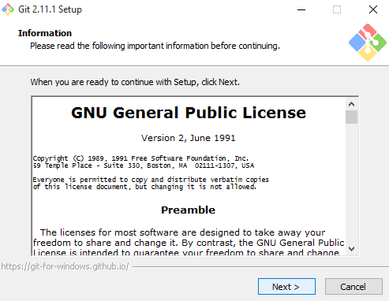
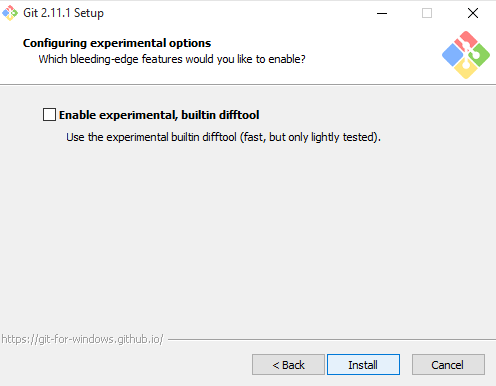
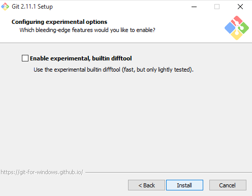

MANUAL GIT
aprendiz
JHON JAIRO RODRIGUEZ
instructor
DANIEL FELIPE RAMIREZ RONCALLO
CIENAGA-MAG
2019
Indice
INTRODUCCION
HISTORIA
COMO INSTALAR GIT
COMANDO TERMINAL
COMANDOS GIT
INTRODUCCION GIT Y GITHUB
El control de versiones es una de las tareas fundamentales para la administración de un proyecto de desarrollo de software en general. Surge de la necesidad de mantener y llevar control del código que vamos programando, conservando sus distintos estados. Es absolutamente necesario para el trabajo en equipo, pero resulta útil incluso a desarrolladores independientes. Git es una herramienta que realiza una función del control de versiones de código de forma distribuida, de la que destacamos varias características: Es muy potente, Fue diseñada por Linus Torvalds,No depende de un repositorio central, entre otras.
siguiendo con esta linea hablamos de GitHub que es una forja (plataforma de desarrollo colaborativo) para alojar proyectos utilizando el sistema de control de versiones Git. Se utiliza principalmente para la creación de código fuente de programas de ordenador.
HISTORIA DE GIT Y GITHUB
Como muchas de las grandes cosas en esta vida, Git comenzó con un poco de destrucción creativa y encendida polémica. El núcleo de Linux es un proyecto de software de código abierto con un alcance bastante grande. Durante la mayor parte del mantenimiento del núcleo de Linux (1991-2002), los cambios en el software se pasaron en forma de parches y archivos. En 2002, el proyecto del núcleo de Linux empezó a usar un DVCS propietario llamado BitKeeper.
En 2005, la relación entre la comunidad que desarrollaba el núcleo de Linux y la compañía que desarrollaba BitKeeper se vino abajo, y la herramienta dejó de ser ofrecida gratuitamente. Esto impulsó a la comunidad de desarrollo de Linux (y en particular a Linus Torvalds, el creador de Linux) a desarrollar su propia herramienta basada en algunas de las lecciones que aprendieron durante el uso de BitKeeper. Algunos de los objetivos del nuevo sistema fueron los siguientes:
Desde su nacimiento en 2005, Git ha evolucionado y madurado para ser fácil de usar y aún conservar estas cualidades iniciales. Es tremendamente rápido, muy eficiente con grandes proyectos, y tiene un increíble sistema de ramificación (branching) para desarrollo no linealDesde su nacimiento en 2005, Git ha evolucionado y madurado para ser fácil de usar y aún conservar estas cualidades iniciales. Es tremendamente rápido, muy eficiente con grandes proyectos, y tiene un increíble sistema de ramificación (branching) para desarrollo no lineal
COMO INSTALAR GIT
- -ingresar a la pagina https://git-scm.com/ ,y descargarlo segun la version de tu equipo. el cuadro aparecera asi Latest source Release 2.24.0 Release Notes (2019-11-04) Download 2.24.0 for Windows
- Una vez descargada, dale click al archivo con el formato Git-version.exe. Al inicio preguntará por permisos para ejecutar el instalador, a lo cual debemos responder que sí 
- Como muchos de los instaladores en Windows, debemos de aceptar las opciones por defecto y darle Next (siguiente) a todo hasta que nos salga el botón de instalar.
- Una vez terminada la configuración del instalador de Git, comenzará a instalar todos los archivos necesarios en la carpeta indicada al inicio.
- Al finalizar la instalación, nos dará la opción de abrir Git Bash para finalizar.
- Y ésta será la terminal que usaremos para ingresar comandos Unix y de Git sobre todo:


 



COMANDO TERMINAL
Para navegar a través de tus directorios y ficheros, hay una serie de comandos necesarios:
- pwd - print working directory - indica en qué directorio te encuentras
- ls - list - lista los directorios y archivos de tu ubicación
- cd - change directory - se utiliza para cambiar de directorio
- cd nombre_del_directorio - navega hacia un directorio descendiente
- cd ../ - sube un directorio
- cd ../../ - sube dos directorios
- cd / - va al directorio raíz de tu ordenador
- mkdir - make directory - crea un directorio
- touch - crea un nuevo file en el directorio donde te encuentras (acordaros de poner siempre la extensión)
Veamos ahora la lista de comandos para manipular los ficheros (mover, cortar, borrar)
- ls -a - lista todos los ficheros, incluso los que están ocultos que empiezan por un .
- ls -l - lista todos los ficheros de un directorio en un formato largo
- ls -t - ordena ficheros y directorios según su fecha de modificación
- ls -alt - lista todos los contenidos, incluso los ficheros ocultos y directorios, en formato largo, ordenados por la fecha de la última modificación.
- cp - copy - copia directorios y archivos. En primer lugar se señala el nombre del archivo cuyo contenido se desea copiar y a continuación el documento donde se quiere pegar
- cp fichero_origen.txt fichero_destino.txt
- cp fichero_origen.txt directorio_destino/ copia un fichero en un directorio de destino.
- cp fichero_origen.txt fichero_destino.txt directorio/ cambia los dos ficheros a un directorio de destino. N.B. Si deseáramos copiar diferentes ficheros en un directorio, deberíamos indicar en primer lugar todos los ficheros y en último lugar el directorio o archivo de destino.
COMANDOS GIT
- git help :Muestra una lista con los comandos más utilizados en GIT.
- configuración Básica Configurar Nombre que salen en los commits git config --global user.name "dasdo"
- Configurar Email git config --global user.email dasdo1@gmail.com
- Marco de colores para los comand git config --global color.ui true
- Iniciamos GIT en la carpeta donde esta el proyecto git init
- Clonamos el repositorio de github o bitbucket git clone
- Añadimos todos los archivos para el commit git add .
- Hacemos el primer commit git commit -m "Texto que identifique por que se hizo el commit"
- subimos al repositorio git push origin master
- Clonamos el repositorio de github o bitbucket : git clone url
- Añadimos todos los archivos para el commit git add .
- Añadimos el archivo para el commit git add archivo
- Añadimos todos los archivos para el commit omitiendo los nuevos git add --all
- Añadimos todos los archivos con la extensión especificada git add *.txt
- Añadimos todos los archivos dentro de un directorio y de una extensión especifica git add docs/*.txt
- Añadimos todos los archivos dentro de un directorios git add docs/